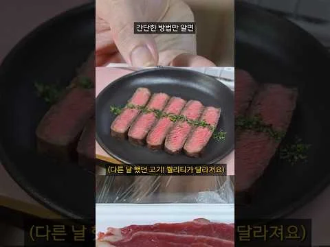
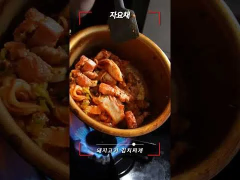
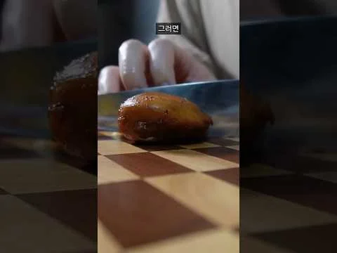
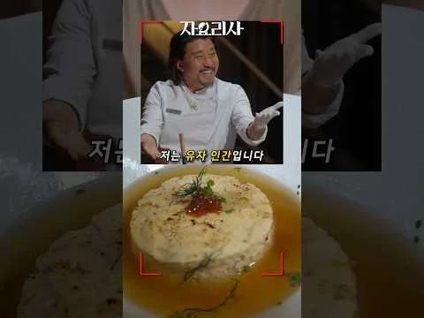

닥터딩요 / DOCTOR DINGYO
편집 · 특수효과
Premiere Pro · After Effects
정종현 · 4년차 콘텐츠 PD
기획의 시작부터
마지막 편집점까지.
01 / SELECTED WORK
다른 시청자.의료 인터뷰에서 핵심과 분위기까지.
각 콘텐츠의 목적에 맞춰 만든
롱폼 작업을 소개합니다.
닥터딩요 / DOCTOR DINGYO
편집 · 특수효과
Premiere Pro · After Effects
하이시간 / HISIGAN
촬영 보조 · 메인 편집
한샘 리하우스 / HANSSEM
촬영 · 편집 전담
02 / PERSONAL CHANNEL
채널 방문 ↗클라이언트의 고충을 알기에
PD로서 먼저 전공했던 분야를 살려서
기획하고, 촬영하고, 편집하며
숏폼의 감각을 키우고 있습니다.
기획 · 촬영 · 편집 / 개인 운영

01↗13만조회자취 요리 / 재료 실험

02↗9만조회자취 요리 / 조리 실험

03↗2.6만조회자취 요리 / 조리 팁

04↗1.2만조회자취 요리 / 레시피 실험
조회수는 2026.10.26 유튜브 공개 표기 기준 · 영상은 YouTube에서 재생됩니다.
03 / BEHIND THE WORK
정종현 / JEONG JONGHYEON잘 만드는 방법을
계속 배우는 사람입니다.
편집으로 영상 일을 시작했습니다. 원하는 장면을 직접 만들기 위해 촬영을 배웠고, 요리 채널에서는 기획부터 업로드까지 직접 해봤습니다.
다양한 현장과 주제를 거치며 쌓은 경험으로, 만드는 과정 전체를 이해하고 맡은 작업을 끝까지 완성합니다.
Premiere Pro · After Effects · Photoshop
Cinema 4D · Illustrator · Ai 활용
호호에듀 / 한샘 리하우스 / 하이시간 / 에듀콥 / 닥터딩요
편집에는 Cutback을 활용합니다. 이 포트폴리오는 ChatGPT·Codex의 도움으로 제작했습니다. 담긴 영상과 장면은 직접 참여한 작업에서 골랐습니다.